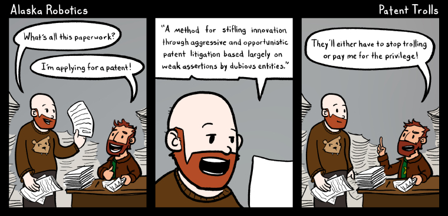
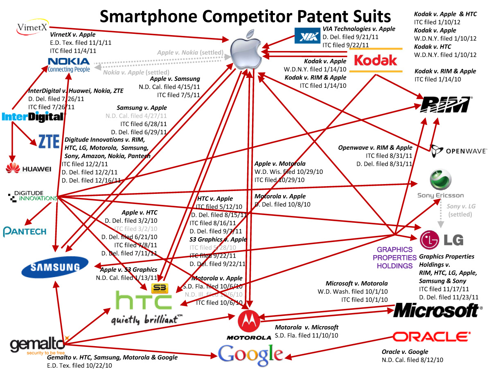
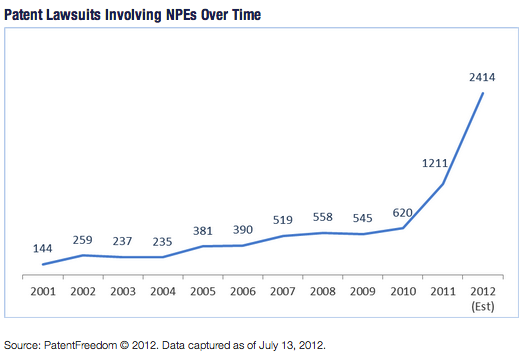
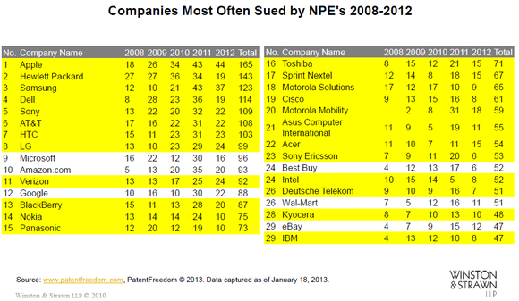

In hoeverre heeft patentrecht invloed op innovatie?
“Patent trolls”
‘Patent trolls’. In 1999 kwam Peter Detkin, een advocaat bij Intel Coropration met deze naam. (Kelly, 2013) Zijn bedrijf werd toen der tijd aangeklaagd voor 15 miljard dollar. Ze werden aangeklaagd voor het produceren van een “semiconductor chip” door een bedrijf die hier patent op had, maar zelf nog nooit zo’n chip had geproduceerd. Dit leidde tot frustratie bij Peter Detkin, en hij noemde zijn tegenstander in deze zaak patent uitbuiters. Toen er met een aanklacht tegen smaad werd gedreigd, hield hij het bij patent trolls. Trolls als in de trollen van de het sprookje de drie geiten, het is een referentie naar de trollen die onder de brug leven en de genen die deze bruggen gebruiken bedreigen. Deze bedrijven hebben buiten ‘Patent trolls’ ook een ‘nettere’ naam namelijk nonpracticing entities, afgekort NPE’s. Maar een nonpracticing entity kan ook een universiteit of een andere onderzoeksorganisatie zijn die simpel weg het kapitaal niet heeft om de uitvinding dan ook op de markt te brengen.
Deze naam “Patent trolls” is velen bijgebleven en wordt nu vaak gebruikt voor bedrijven die niets produceren maar geld verdienen via patentrechten. Ze doen dit door patenten van anderen te kopen, en zelf verder niet echt onderzoek te doen naar nieuwe ideeën. De patenten kopen ze vaak van bedrijven die failliet gaan, of van bedrijven die dingen hebben uitgevonden maar geen geld hebben om er iets mee te doen. De patenten die ze kopen gebruiken ze om geld te verdienen van bedrijven die een succesvolle markt voor een product hebben gebouwd. Als er dan een product op de markt komt die bijvoorbeeld gebruik maakt van technologie waar de patent troll patent op heeft, dan klaagt de patent troll het bedrijf van dit product aan. Het verdedigen van een patentzaak kost erg veel geld en veel bedrijven settelen dan ook vaak buiten de rechtszaak. Dit kan een bedrijf alsnog veel geld kosten, en de patent trolls verdienen hier vaak veel geld aan. Dit kan er voor zorgen dat een bedrijf veel minder winst maakt en er minder geld is voor de productie.
Bedrijven kunnen dus erg onder deze patent trolls lijden. Zo was de verloren winst in de Amerikaanse economie in 2011 30 miljard dollar. (Siedsma, 2013) In het technologische nieuws zien we vaak grote bedrijven die de ‘strijd de patenten’ tegen elkaar opnemen, denk maar aan Apple en Samsung. Deze bedrijven zijn zo groot dat de patenten wel tot grote verliezen leiden, maar dit blijft relatief gezien aan de winst vrij minimaal. Deze bedrijven zijn zo groot dat ze deze strijd aan kunnen. Zo was er bijvoorbeeld een patent op de naam iPad (Schellevis, 2010), maar kon Apple deze naam overnemen van het bedrijf “Fujitsu”. Dit bedrijf is hiervoor hoogstwaarschijnlijk gecompenseerd. Nu is dit een voorbeeld wat slechts een naam betreft, voor net gestarte bedrijven is dit niet het grootste probleem. Startende bedrijven die een bepaald product willen produceren of technologie willen gebruiken, waar een patent op zit, kunnen hiervoor niet compenseren en kunnen het niet veroorloven om deze strijd aan te gaan. Startende bedrijven zullen dus vaak hun product niet kunnen uitbrengen en/of falliet gaan wanneer er een patent op hun product zit. Wanneer dit niet het geval is heeft het in ieder geval een erg grote impact op de winst. (Mashnick, 2012)
  Startende bedrijven zijn erg belangrijk voor de banensector en innovatie. Wanneer een startend bedrijf zijn product niet kan verkopen leidt dit tot een gemiste kans. Wanneer dit bedrijf niet zou worden gehinderd door de patenten zou het zijn product kunnen verkopen en dit zou weer kunnen leiden tot meer banen, wanneer de verkoop succesvol zou zijn. Maar wanneer dit bedrijf wel wordt gehinderd leidt dit niet alleen tot een gemis in de banensector maar ook een gemis qua innovatie. Wanneer een bedrijf een bepaald product of technologie niet kan gebruiken, kan dit product of deze technologie dus niet worden geoptimaliseerd. En als er sprake is van een patent troll wordt deze technologie of product dus ook nog eens niet gebruikt. Oftewel de hele wereld loopt misschien wel een heel goed product mis, omdat een bedrijf winst wil maken via patenten. Zo heeft patent, nu dus via de patent trolls, invloed op de innovatie. (Fischer and Henkel, 2010)
Wanneer er via innovatie en optimalisatie geen winst meer te maken valt door het lijden onder patenten, zullen bedrijven zich hier minder op richten. Het is dan namelijk niet alleen meer het idee wat zorgt voor de winst, maar vooral de omgang met het idee. De rechten zullen het belangrijkst zijn, en alleen grote bedrijven kunnen hier omheen zeilen, vanwege het kapitaal dat deze bedrijven hebben. Omdat kleine bedrijven/startende bedrijven dit niet kunnen zullen deze niet mee kunnen concurreren, iets wat je nu ook al erg ziet.
Dus de patenten remmen innovatie in een vrij grote mate. De grote bedrijven maken er verlies onder, maar voor de echt grote bedrijven valt dit verlies relatief gezien aan de winst vaak mee, maar deze bedrijven leiden er ook al onder. Maar de startende bedrijven kunnen dit niet veroorloven en hierdoor wordt de innovatie dus geremd, wij als consumenten lopen producten mis die niet geproduceerd worden door de patenten.
Oplossing tegen deze verliezen
Hoe kan dit probleem worden opgelost? De patent trolls zorgen voor grote verliezen en produceren zelf niets, dit zorgt voor vermindering in innovatie. Hoe kan deze innovatie minder worden geremd?
Een vrij hectische oplossing zou het afschaffen van patenten zijn, ten goede van de innovatie. Maar dit zou geen goede oplossing zijn. Dit zou de innovatie ook niet heel erg veel helpen. Het uitvinden is dan niet meer het deel waar de winst wordt gemaakt. De marketing zou de focus worden. Wanneer iedereen met een idee geld kan verdienen, wint degene die de marketing en productie het best aanpakt. Dit zal dus ook niet leiden tot een stijging in innovatie en de innovatie ook remmen.
De patenten hebben namelijk ook voordelen voor de innovatie. Als je als bedrijf weet dat je met een idee geld kan verdienen zal je sneller met een idee willen komen. D.m.v. octrooirechten kan een bedrijf geld verdienen aan zijn product zonder dat andere bedrijven dit bedrijf met hetzelfde idee concurreren.
Maar hoe kunnen de patentproblemen worden aangepakt zonder dat de startende bedrijven eronder leiden en vooral de patent trolls worden getackeld? Het belangrijkste wat een overheid tegen deze patent trolls kan doen en wat in Amerika (Pham, 2013) ook al voor een deel wordt doorgevoerd is het belang van het “First to file”-systeem, wat we bij hiervoor al beschreven hebben, groter te maken. Het “first to file”-systeem is wel een concept wat in de patentwetgeving van Amerika voorkomt. Het laten zien van dat iets praktisch toepasbaar is, dus alleen in bezit zijn van het patent is niet meer genoeg, waardoor een ander bedrijf toch hun productie kunnen beginnen.
Ook zou er aanpassingen kunnen worden gemaakt aan de octrooirechten. De duur van een patent zou bijvoorbeeld kunnen worden verminderd. We leven in een periode waar de een na de andere uitvinding plaatsvind en het is belangrijk om deze bedrijven zo veel mogelijk kans te geven. Het octrooirecht duurt nu twintig jaar. Met het idee levens veranderende uitvindingen niet tegen te houden. Maar misschien is deze wet verouderd. In deze tijd en eeuw is twintig jaar misschien wel te lang. Het verkorten van deze tijden zou niet allen zorgen voor meer innovatie omdat de patent trolls minder invloed hebben, het zou ook veel bedrijven die niet persé worden gehinderd door patent trolls, maar door ‘gewone’bedrijven, kunnen helpen. Wanneer een uitvinding na bijvoorbeeld 7 jaar vrij is voor andere bedrijven om hier gebruik van te maken, zullen hierdoor misschien wel betere manieren om met deze uitvinding om te gaan ontstaan. Dit leidt tot meer innovatie en meer optimalisatie van producten. Dit zou de markt dus erg kunnen helpen.
Conclusie
Kortom, patenten kunnen innovatie erg remmen, vooral de patenten van patent trolls. De oplossing hiervan kan het “first to file”-systeem belangrijker maken. Ook zou het korter maken van octrooirechten niet alleen de patent trolls tegenhouden, maar de algehele innovatie helpen.